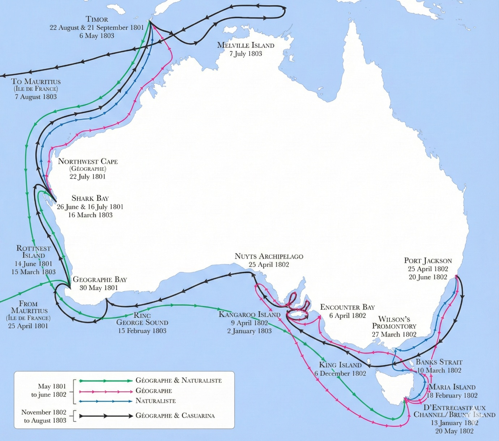
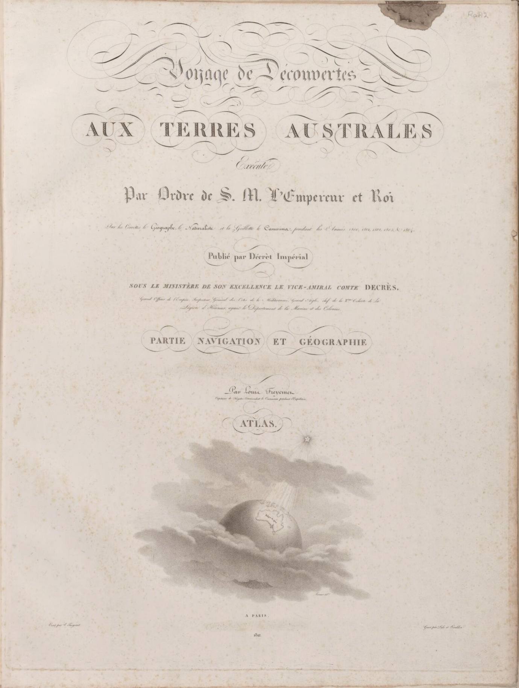
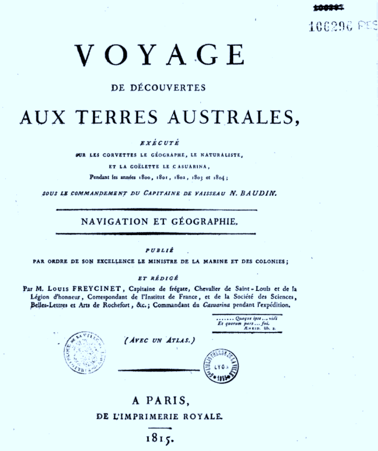

5. The Nomenclature of Péron and Freycinet as an Expression of the New French National Narrative 
The Route Followed by the Baudin Expedition
Baudin’s voyage, conceived as a scientific rather than a military expedition, was granted a British passport allowing its corvettes to pass through the blockade of French coasts. British authorities nevertheless remained wary, having already established a colony in New South Wales and contemplating further settlements in territories the French were to explore. Accordingly, Matthew Flinders was tasked by the British Admiralty, aboard HMS Investigator, with surveying and charting the still unknown coasts of Australia. The nomenclature devised by Péron and Freycinet reflects this Franco-British rivalry in the attribution of place names.
Delayed at the Isle de France (Mauritius), Baudin reached Australian waters during the unfavourable season and consequently altered his programme. He began with the western coast of New Holland, already partially known to the Dutch, before turning to the still uncharted southern coast. The expedition named several previously unrecorded geographical features (such as Baie du Géographe), continued on to Timor, and then conducted an extended exploration of Tasmania.
In April 1802, on what is now the South Australian coast, Baudin encountered Flinders, who was surveying the same region in the opposite direction. The meeting was courteous yet fraught with implications: the French realised that a British rival had already covered part of their intended mission. Péron and Freycinet subsequently compensated for this situation by multiplying Napoleonic place names along the southern coast.
After a prolonged stay at Port Jackson (Sydney) in 1802, Baudin resumed his surveys, explored the islands of Bass Strait, and returned in 1803 to the southern coast. He was the first to circumnavigate Kangaroo Island (which he named Île Borda), later renamed Île Decrès by Péron and Freycinet. Several gulfs and localities were likewise renamed, although Flinders ultimately secured the adoption of many British names under the principle of first discovery claimed by the British.
In March–April 1803, the expedition revisited the western coast in order to verify and refine its surveys and coordinates.

A Nomenclature Reflecting Napoleonic France
The reception of Baudin’s voyage in Paris (1804–1805) was marked by criticism of its commander — criticism whose justification remains debatable. Under the patronage of the ministerial and scientific authorities of the Napoleonic Empire, Péron and Freycinet were responsible for editing and publishing the Voyage de découvertes aux Terres Australes (1807–1816) and its accompanying atlases, in which the nomenclature was systematically established.

Source : National Library of Australia

They realigned the nomenclature with the values, political priorities, and national ethos of the Napoleonic regime, avoiding revolutionary leaders while highlighting officially recognised figures in the scientific, cultural, military, and administrative spheres.
Overall, approximately three-quarters of the place names honour individuals whose actions or works were perceived as contributing to the greatness of the French nation. Roughly half of these (around 230) represent French knowledge and culture — primarily scientists, but also figures from literature and the arts. Another major category encompasses the political, administrative, and military spheres: senior officers past and present (158), members of the imperial family (25), and names commemorating French victories (29). The names Bonaparte and Napoleon were reserved for major geographical features.
Approximately sixteen per cent of the names (99) honour members of the expedition and its vessels. Several participants received multiple commemorations (Péron, Boullanger, Lesueur, Leschénault, Pierre Faure, Louis Freycinet), whereas Baudin himself, despite his achievements, was not commemorated in any place name. His second-in-command, Hamelin, received two names in Western Australia. Only about eight per cent (46) of the names directly describe the geography or natural history of the coasts.
Scholars at the Heart of the Nomenclature
The prominence of scientific figures reflects both the scientific nature of the voyage and the prestige of science in Napoleonic France. Péron and Freycinet honoured numerous mathematicians, astronomers, engineers, naval architects, geographers, naturalists, and members of key institutions such as the Institut, the Bureau des longitudes, and the École polytechnique, all regarded as central to the modernisation of the state and navy.
The nomenclature includes mathematicians (Monge, Laplace, Delambre), geodesists and geographers (Cassini, Buache, Mentelle, Fleurieu), engineers and instrument-makers (Bélidor, Sané, Lenoir, Berthoud), as well as naturalists, botanists, entomologists, and geologists (Thouin, Jussieu, Buffon, Lamarck, Cuvier, Latreille, Haüy, Dolomieu, Saussure). It also reflects contemporary scientific debates — on the fixity or transformation of species, classification systems, and the emergence of new disciplines such as geology and anthropology.
The nomenclature further pays tribute to scholars who fell victim to political violence (such as Condorcet and Lavoisier), as well as to naturalists who served science under difficult conditions, sometimes at the cost of their lives (Commerson, Lamanon, Dombey, Sonnerat).
Literature and the Arts in the New National Narrative
Unusually for a nomenclature derived from a voyage of discovery, Péron and Freycinet also attributed numerous names to French authors, philosophers, and artists. This selection favoured figures whose reputations were consolidated or revived during the Revolution and the Empire, as well as artists associated with the prestige of the Napoleonic regime. Conversely, certain contemporary intellectuals deemed too critical of the regime were excluded.
The nomenclature thus constructs a cultural pantheon aligned with the imperial national narrative, celebrating authors and artists regarded as national glories while excluding those whose ideas conflicted with the Napoleonic political order.
Administrators, Military Figures, and Naval Officers
The nomenclature also honours numerous servants of the state, including administrators, ministers, army officers, and naval officers. It includes both contemporaries of Napoleon and earlier figures reinterpreted as precursors of French greatness. This selection contributes to the construction of a unified and hierarchical national narrative, in which certain figures from the seventeenth and eighteenth centuries are reassessed in light of imperial priorities.
Among military figures, particular emphasis is placed on heroes of the Napoleonic campaigns, as well as earlier figures such as Turenne, Bayard, Duguesclin, Joan of Arc, and Jeanne Hachette. In the naval sphere, Péron and Freycinet honoured emblematic officers of the French navy, including participants in major maritime conflicts of the seventeenth and eighteenth centuries.
Napoleon, His Family, and Terre Napoléon
Finally, twenty-five place names honour Napoleon and his family, particularly in South Australia — a contested region in which both French and British claimed priority of discovery. Péron and Freycinet designated the still poorly known coast as Terre Napoléon and assigned imperial names to its major gulfs (Golfe Napoléon, Golfe Joséphine). Other members of the Bonaparte family, Joséphine’s circle, and imperial alliances were likewise inscribed into this symbolic geography.
This concentration of imperial names in a contested zone illustrates the extent to which nomenclature functioned as an instrument of national prestige, political memory, and symbolic assertion at a time when the Empire sought to redefine France’s place in the world.
5. La nomenclature de Péron et Freycinet comme expression du nouveau récit national français
L’itinéraire suivi par l’expédition Baudin
Le voyage de Baudin, conçu comme une expédition scientifique et non militaire, bénéficiait d’un passeport britannique autorisant ses corvettes à franchir le blocus des côtes françaises. Les autorités britanniques demeuraient néanmoins méfiantes, car elles avaient déjà colonisé la Nouvelle-Galles du Sud et envisageaient de nouvelles implantations sur les terres que les Français devaient explorer. Matthew Flinders fut ainsi chargé par l’Amirauté britannique, à bord du HMS Investigator, de reconnaître et relever les côtes encore inconnues de l’Australie. La nomenclature de Péron et Freycinet reflète cette rivalité franco-britannique dans l’attribution de noms de lieux.
Retardé à l’Isle de France (Maurice), Baudin arriva en eaux australiennes pendant la mauvaise saison et modifia son programme: il commença par la côte ouest de la Nouvelle-Hollande, déjà partiellement connue des Hollandais, avant de se tourner vers la côte sud encore inconnue. L’expédition nomma divers éléments géographiques jusque-là non cartographiés (par exemple la Baie du Géographe), poursuivit vers Timor, puis explora longuement la Tasmanie. En avril 1802, sur la côte aujourd’hui sud-australienne, Baudin rencontra Flinders, qui explorait la même zone en sens inverse. La rencontre fut courtoise mais lourde d’enjeux: les Français comprirent qu’un rival britannique avait déjà couvert une partie de leur mission. Péron et Freycinet compensèrent ensuite cette situation en multipliant les noms napoléoniens sur la côte sud.
Après un long séjour à Port Jackson (Sydney) en 1802, Baudin relança ses relevés, fit explorer les îles du détroit de Bass et revint en 1803 sur la côte sud. Il fut le premier à contourner Kangaroo Island (qu’il nomma Île Borda), rebaptisée ensuite Île Decrès par Péron et Freycinet. Plusieurs golfes et lieux furent également renommés, mais Flinders imposa finalement de nombreux noms britanniques en vertu du droit de première découverte revendiqué par les Anglais.
En mars-avril 1803, l’expédition revisita la côte ouest afin de vérifier et compléter ses relèvements et coordonnées.
Voir aussi la chronologie du voyage
Une nomenclature reflétant l’esprit de la France napoléonienne
À Paris, entre 1804 et 1805, la réception du voyage de Baudin fut compliquée par les critiques adressées au commandant défunt. Péron et Freycinet réorientèrent la mise en valeur des résultats de l’expédition au profit des autorités gouvernementales, notamment Denis Decrès, ministre de la Marine, et Jean-Baptiste de Nompère de Champagny, ministre de l’Intérieur. Freycinet fut chargé de la réalisation de l'atlas et des sections consacrées à la navigation et à la géographie, tandis que Péron rédigea le récit officiel, correspondant à la partie historique. Napoléon autorisa la publication de l’ensemble à partir de 1806.
Le Voyage de découvertes aux Terres Australes parut en plusieurs volumes (1807 et 1816), accompagnés d’atlas illustrés et cartographiques (1807 et 1811). Freycinet acheva ensuite un atlas nautique et géographique plus détaillé, publié en 1815, qu’il compléta par un ouvrage de navigation et de géographie paru la même année, dans lequel la nomenclature est présentée de manière systématique. Sous la pression de ses supérieurs de la Marine, il y réintroduisit le nom de Baudin dans le titre, après qu’il eut été écarté des publications précédentes.
Les noms de lieux de la nomenclature peuvent être suivis dans ces publications successives.
Source : National Library of Australia
Péron et Freycinet, confiants dans l’appui du régime napoléonien et dans leur statut scientifique, recomposèrent la nomenclature des lieux « découverts » par les Français en privilégiant des savants, des figures culturelles et des icônes nationales. Le basculement politique entre Révolution et Empire se lit dans ces choix: les références révolutionnaires s’effacent au profit d’un ordre hiérarchisé, impérial et national, renforcé après le sacre de Napoléon et Joséphine en 1804.
Ils réalignèrent ainsi la nomenclature sur les valeurs, les priorités politiques et l’imaginaire national du régime napoléonien, en évitant les leaders révolutionnaires et en mettant en avant les figures officiellement reconnues dans les domaines scientifique, culturel, militaire et administratif.
Au total, environ les trois quarts des noms de lieux honorent des personnalités dont les actions ou les œuvres étaient perçues comme contribuant à la grandeur de la Nation française. Environ la moitié d’entre eux (230) représentaient les savoirs et la culture française (principalement des savants, mais aussi des figures des lettres et des arts). Une autre grande catégorie relève des sphères politique, administrative et militaire: officiers supérieurs anciens et contemporains (158), membres de la famille impériale (25) et noms évoquant des victoires françaises (29). Les noms Bonaparte et Napoléon furent réservés à des éléments géographiques majeurs.
Environ seize pour cent des noms (99) honorent les membres de l’équipage et les navires de l’expédition. Plusieurs participants reçurent plusieurs hommages (Péron, Boullanger, Lesueur, Leschénault, Pierre Faure, Louis Freycinet), tandis que Baudin lui-même, malgré ses réalisations, ne fut honoré d’aucun nom de lieu. Hamelin, son second, reçut deux noms en Australie-Occidentale. Huit pour cent seulement (46) des noms décrivent directement la géographie ou l’histoire naturelle des côtes.
Les savants au cœur de la nomenclature
Le poids des noms de savants dans la nomenclature reflète à la fois la nature scientifique du voyage et le prestige des sciences dans la France napoléonienne. Péron et Freycinet honorent de nombreux mathématiciens, astronomes, ingénieurs, constructeurs navals, géographes, naturalistes et membres d’institutions comme l’Institut, le Bureau des longitudes ou l’École polytechnique, perçues comme centrales dans la modernisation de l’État et de la marine.
La nomenclature fait place à des mathématiciens (Monge, Laplace, Delambre, etc.), à des géodésiens et géographes (Cassini, Buache, Mentelle, Fleurieu), à des ingénieurs et instrumentistes (Bélidor, Sané, Lenoir, Berthoud), ainsi qu’à des naturalistes, botanistes, entomologistes et géologues (Thouin, Jussieu, Buffon, Lamarck, Cuvier, Latreille, Haüy, Dolomieu, Saussure, etc.). Elle reflète aussi les débats scientifiques de l’époque (fixité des espèces, transformisme, classification du vivant) et l’essor de disciplines nouvelles comme la géologie et l’anthropologie.
Elle rend également hommage à des savants victimes des violences politiques (comme Condorcet et Lavoisier) et à des naturalistes ayant servi la science dans des conditions difficiles, parfois jusqu’à la mort, comme Commerson, Lamanon, Dombey ou Sonnerat.
Les lettres et les arts dans la nouvelle narration nationale
Plus inhabituel pour une nomenclature issue d’un voyage de découverte, Péron et Freycinet attribuèrent aussi de nombreux noms à des auteurs, philosophes et artistes français. Cette sélection privilégie des figures dont la réputation fut consolidée ou réactivée pendant la Révolution et l’Empire, ainsi que des artistes associés au prestige du régime napoléonien. À l’inverse, certaines figures intellectuelles contemporaines, jugées trop critiques du régime, furent exclues.
La nomenclature compose ainsi un panthéon culturel compatible avec le récit national impérial: elle consacre les auteurs et artistes considérés comme gloires de la nation et écarte ceux dont les idées entraient en contradiction avec l’ordre politique napoléonien.
Administrateurs, militaires et officiers de marine
La nomenclature honore aussi de nombreux serviteurs de l’État, répartis entre administrateurs/ministres, officiers de l’armée de terre et officiers de marine. On y trouve à la fois des contemporains de Napoléon et des figures plus anciennes, réinterprétées comme précurseurs de la grandeur française. Cette sélection participe à la construction d’un récit national unifié et hiérarchisé, dans lequel certaines figures des XVIIe et XVIIIe siècles sont réévaluées à la lumière des priorités de l’Empire.
Parmi les militaires, sont particulièrement valorisés les héros des campagnes napoléoniennes, mais aussi des figures plus anciennes (Turenne, Bayard, Duguesclin, Jeanne d’Arc, Jeanne Hachette). Du côté naval, Péron et Freycinet rendent hommage à des officiers emblématiques de la marine française, y compris des acteurs des grandes batailles maritimes des XVIIe et XVIIIe siècles.
Napoléon, sa famille et la Terre Napoléon
Enfin, 25 noms de lieux honorent Napoléon et sa famille, surtout en Australie-Méridionale, région disputée où Français et Britanniques revendiquaient la priorité de découverte. Péron et Freycinet nommèrent la côte encore mal connue « Terre Napoléon » et donnèrent à ses grands golfes des noms impériaux (Golfe Napoléon, Golfe Joséphine). D’autres membres de la famille Bonaparte, de l’entourage de Joséphine et des alliances impériales furent également inscrits dans cette géographie symbolique.
Cette concentration de noms impériaux sur une zone contestée montre à quel point la nomenclature fonctionnait comme un instrument de prestige national, de mémoire politique et d’affirmation symbolique française au moment où l’Empire cherchait à redéfinir la place de la France dans le monde.